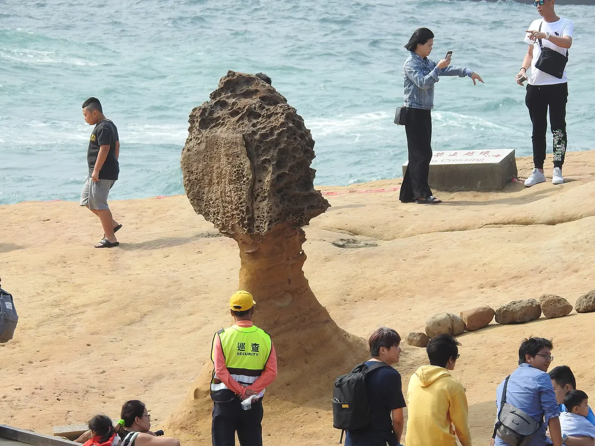

예류·스펀·스펀폭포·지우펀 일일투어, 지우펀에선 뭘 먹을까?
하루에 북부 명소 네 곳을 도는 투어 전에, 곳곳의 볼거리와 지우펀 골목 맛집을 미리 챙겨보세요.
게시
타이베이 근교 북부 해안과 산골 마을을 하루에 묶는 이 투어는 예류(野柳), 스펀(十分), 스펀폭포(十分瀑布), 지우펀(九份)을 차례로 둘러봐요. 대중교통으로는 하루에 다 돌기 빠듯한 곳들이라 투어가 편하고, 마지막에 들르는 지우펀 골목에서 저녁을 해결하면 동선이 깔끔해요. 交通部觀光署 자료를 바탕으로 2026년 10월 기준으로 정리했어요.
01 · 투어로 가는 네 곳은 어떤 곳일까
예류는 바닷물과 바람이 바위를 깎아 만든 버섯바위·두부바위가 모인 해안이고, 스펀은 平溪線 기찻길 양옆에 가게가 붙은 마을이에요. 스펀폭포는 스펀 마을 근처에 있는 커튼형 폭포이고, 지우펀은 1890년 무렵 금이 발견되며 번성한 산비탈 광산 마을이에요.

02 · 명소별로 꼭 볼 것
예류 '女王頭' 옆얼굴이 여왕을 닮은 버섯바위예요. 곶 끝까지 이어진 길을 따라 여러 모양의 기암을 차례로 볼 수 있어요.
스펀 풍등 철길 위에서 소원을 적은 풍등(天燈)을 날리는 것이 대표 체험이에요.
스펀폭포(十分瀑布) '대만의 나이아가라'라 불리는 커튼형 폭포예요. 스펀 마을에서 가까워 풍등을 날린 뒤 이어서 들르기 좋아요.
지우펀 골목과 돌계단 길 좁은 골목을 따라 먹거리 가게가 이어지고, 돌계단 길에는 애니메이션 「센과 치히로의 행방불명」의 모티브가 된 것으로 유명해진 아메이찻집이 있어요.
03 · 가는 법
투어로 가기 네 곳은 서로 떨어져 있어 하루에 묶으려면 투어가 편해요. 일정, 포함 사항, 출발 장소와 시간은 상품 옵션마다 달라요. 예약 전에 클룩 상품 페이지에서 꼭 확인하세요.
직접 간다면 택시와 버스를 섞는 방법은 예류·지우펀 택시 vs 버스투어, 스펀 기차 동선은 핑시선 루이팡·허우퉁·스펀 글에 정리해뒀어요.
04 · 스펀에서 무조건 먹어야 하는 맛 3대장
스펀 옛 거리(十分街)에서 풍등을 날린 뒤 들르기 좋은, 저희가 직접 추천하는 세 곳이에요.
스펀 리우거 닭날개볶음밥 (十分溜哥燒烤雞翅包飯) 버스투어 승객 모두가 아는 맛
스펀 취두부 (十分寶桂臭豆腐) 대만 취두부 도전하기 딱 좋은 맛
스펀 소세지 (十分黑豬肉香腸) 1개만 먹으면 후회하는 맛
05 · 지우펀 옛 거리에서 들르기 좋은 맛집
투어 마지막 코스인 지우펀 옛 거리 안쪽에 지도에 등록된 가게가 모여 있어요. 모두 골목 안 0.1~0.2km 거리라 자유 시간에 걸어서 들르기 좋아요. 아래 거리는 지도에 등록된 좌표로 잰 직선거리라 실제 이동 거리는 더 길 수 있어요.
安迪藥燉排骨 · 대만식 · 북쪽 약 0.1km 지도 메모: 지우펀의 국수집으로, 시원한 국물의 국수와 육즙 가득한 만두를 저렴하게 즐길 수 있다.
石頭貓 · 카페 · 북서쪽 약 0.1km 지도 메모: 지우펀의 고양이 소품 가게 겸 카페로, 허니 포멜로 티가 맛있고 음료 가격도 착하다.
阿柑姨芋圓 · 빙수 · 남서쪽 약 0.1km 지도 메모: 지우펀의 유명한 위위안(토란떡) 가게로, 걷다가 목마를 때 먹는 위위안 빙수가 맛있다.
魚丸伯仔 · 국수 · 북동쪽 약 0.1km 지도 메모: 지우펀의 어묵탕 가게로, 어묵탕과 비빔국수를 함께 시켜 먹기 좋다. 1인 1메뉴 주문이 원칙이다.
微光森林 Twilight Cafe · 카페 · 남동쪽 약 0.2km 지도 메모: 지우펀 옛거리 위쪽 골목의 카페로, 숲속 같은 분위기에서 좋은 커피와 아침 식사를 즐길 수 있다.
가게마다 쉬는 날과 영업시간이 다르니 방문 전 구글맵에 등록된 영업시간을 확인하세요.
지도에서 지우펀·근교 맛집도 확인해보세요
투어 자유 시간에 들를 곳을 지도에서 미리 찜해두세요.